Introduction
Solar flares are among the most energetic events in our solar system, releasing enormous quantities of energy across the electromagnetic spectrum in timescales ranging from milliseconds to hours. The underlying physical mechanisms — particularly sub-second oscillatory phenomena known as Quasi-Periodic Pulsations (QPPs) — remain poorly understood because existing solar monitors lack the temporal resolution and multi-band simultaneity needed to resolve them.
QPPs have been detected in microwave, hard X-ray, and EUV emissions, but the temporal relationships between these bands at sub-second cadence are largely unconstrained. The spatial dynamics of the soft X-ray source during a flare — and the thermal evolution of the flare late phase on centi-second timescales — are similarly unexplored observational frontiers.
The Active Solar Irradiance Observer (ASIO) is designed specifically to fill these gaps. Scheduled for launch in 2027 aboard NASA's MUSE (MUlti-slit Solar Explorer) spacecraft, ASIO delivers simultaneous high-cadence irradiance measurements in the SXR and HXR bands with integrated coarse source localization — a capability not available in any existing solar instrument.
Research Objectives
- 1. Do sub-second Quasi-Periodic Pulsations (QPPs) exist simultaneously across the SXR, HXR, and EUV energy bands? Are there measurable temporal offsets between bands that reveal the causal sequence of energy release?
- 2. Are soft X-ray sources during solar flares spatially stationary, or do they exhibit rapid motion across the solar disk? If dynamic, over what spatial extent and on what timescale?
- 3. How does the thermal structure of a solar flare evolve during its late phase on centi-second timescales — and what temperature and emission measure trajectories emerge as the plasma cools?
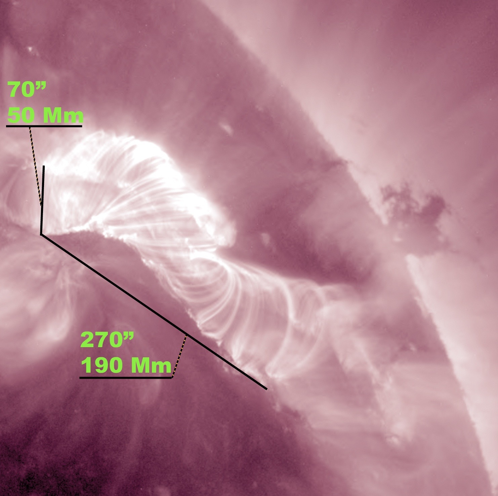
Fig. 1. EUV observation of a solar flare. Scale markers indicate the source spans 50–190 Mm across the solar disk.
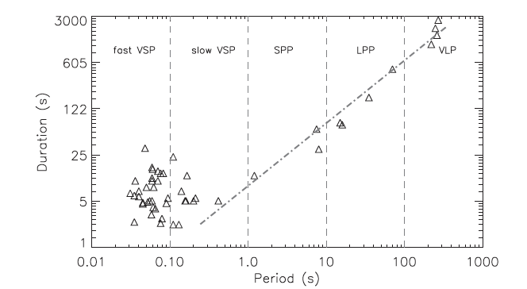
Fig. 2. QPP classification by period and duration (Tan et al. 2010). ASIO targets the fast and slow VSP regimes at sub-second cadence.
The Instrument
ASIO is a compact photometer engineered as a hosted payload on the NASA MUSE spacecraft, which will occupy a Sun-synchronous low Earth orbit at ~667 km. The instrument leverages MUSE's spacecraft bus for power, thermal control, and telemetry while providing a high-cadence X-ray measurement channel fully independent of MUSE's primary UV spectrograph.
The flight chassis is precision-machined from aluminum with multiple aperture channels, each coupling solar X-rays to dedicated solid-state photodiode detectors. A shadow plate upstream of the SXR detector array provides coarse source localization without imaging optics — differential shadow patterns across detector segments encode the angular position of the X-ray source on the solar disk. An adjustable mounting ring permits fine alignment of the instrument axis after spacecraft integration.
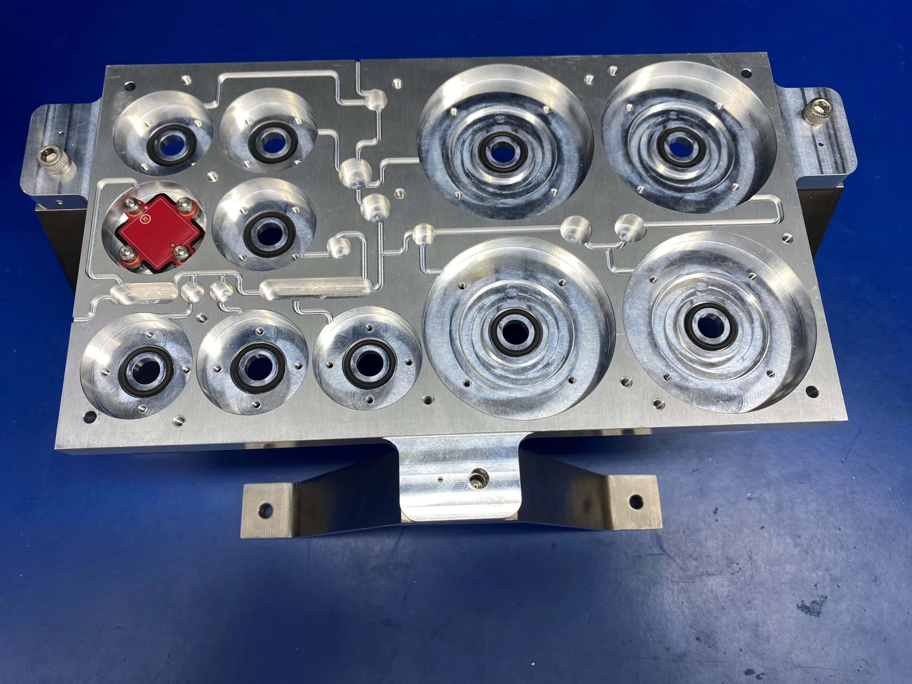
Fig. 3. ASIO flight instrument — precision-machined aluminum housing with multiple X-ray aperture channels and solid-state photodiode detectors.
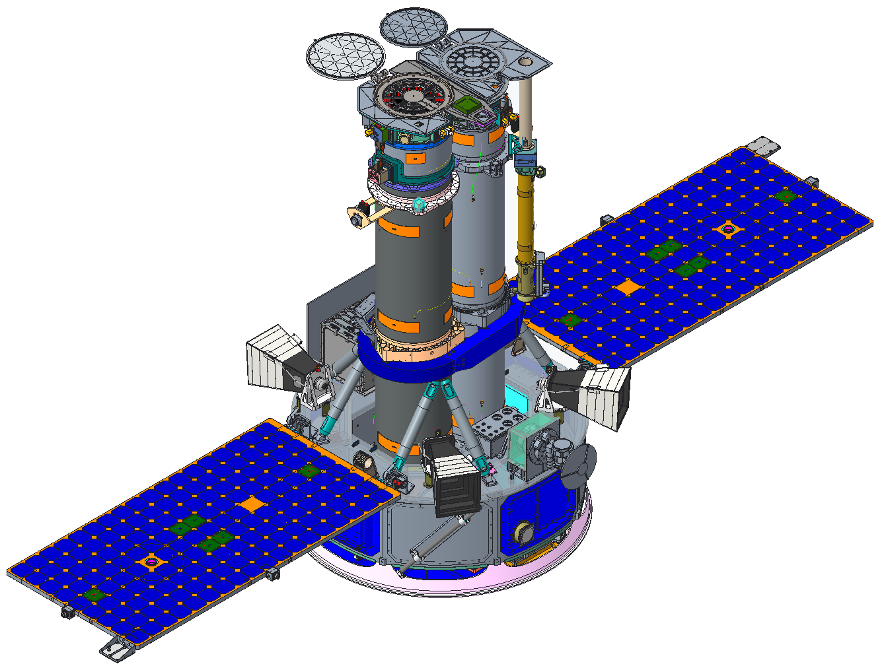
Fig. 4. MUSE spacecraft CAD rendering. ASIO flies as a hosted payload on the main bus, launching in 2027.
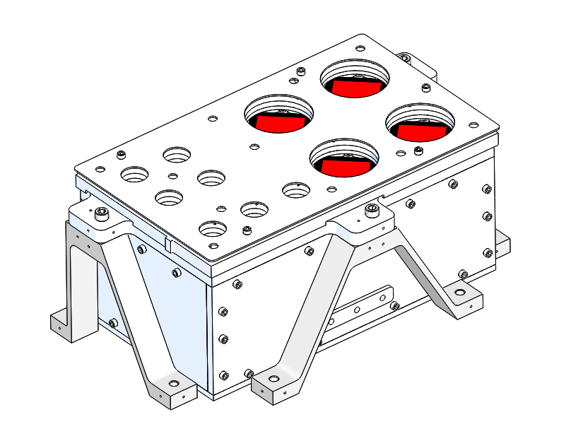
Fig. 5. ASIO structural CAD model showing aperture geometry and detector mounting.
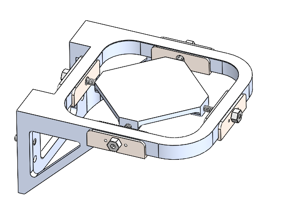
Fig. 6. Adjustable positioning ring enabling precise instrument alignment after spacecraft integration.
Alignment Procedure
The shadow plate upstream of the SXR photodiode array encodes the angular position of a solar X-ray source as a differential shadow pattern. Comparing flux ratios between detector segments yields a coarse source centroid without imaging optics. Post-integration alignment is characterized with an automated edge-detection pipeline: exterior and interior aperture corners are located to sub-pixel accuracy, compared against the optical model, and the adjustable ring is locked once verified.
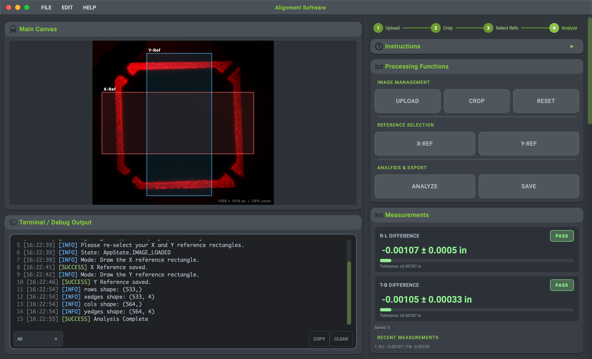
Fig. 7. Custom alignment characterization GUI. The operator selects X/Y reference regions; the pipeline computes aperture-edge centroids and evaluates deviations against a ±0.00787 in tolerance.
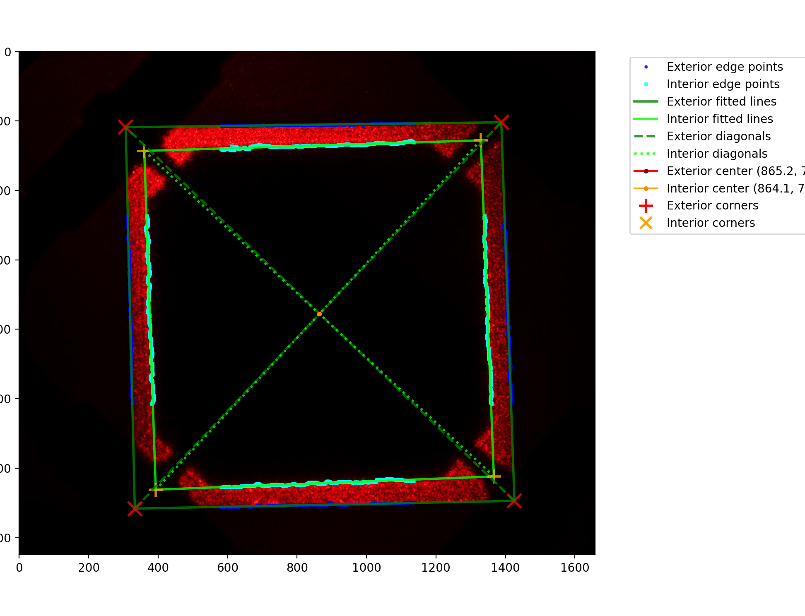
Fig. 8. Edge-detection output — sub-pixel localization of interior and exterior aperture corners.
Instrument Testing
All ASIO assembly and integration was performed under Class 100 cleanroom conditions at MSU's SSEL facility. Calibrated red laser sources illuminated the aperture assembly on an optical bench to map the spatial response of each photodiode channel and validate the shadow-plate positional sensing concept. Differential illumination patterns matched ray-trace model predictions, confirming readiness for flight integration.

Fig. 9. ASIO integration in the Class 100 cleanroom facility at MSU SSEL.

Fig. 10. ASIO on the optical bench during laser aperture characterization.
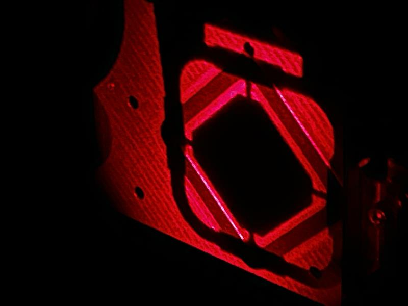
Fig. 11. Red laser illumination of the shadow-plate aperture validating positional sensing geometry.
Data Analysis
ASIO's science pipeline converts multi-band irradiance time series into temperature and emission measure using ratios of SXR and HXR fluxes under an isothermal plasma assumption. Quasi-Periodic Pulsations are identified via continuous wavelet decomposition, which resolves the time-frequency structure of the irradiance signal and isolates statistically significant periodic components above global (95%) and local (99%) significance thresholds. Synthetic signal validation — shown below — confirms robust QPP recovery from realistic noise environments prior to first-light solar observations.
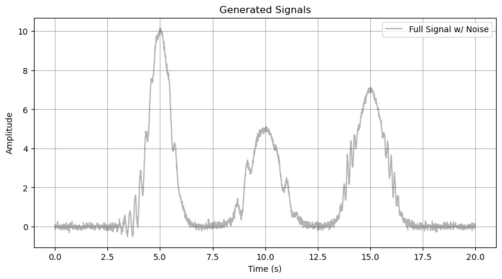
Fig. 12. Simulated irradiance time series with embedded quasi-periodic structure and additive noise — the pipeline validation input.
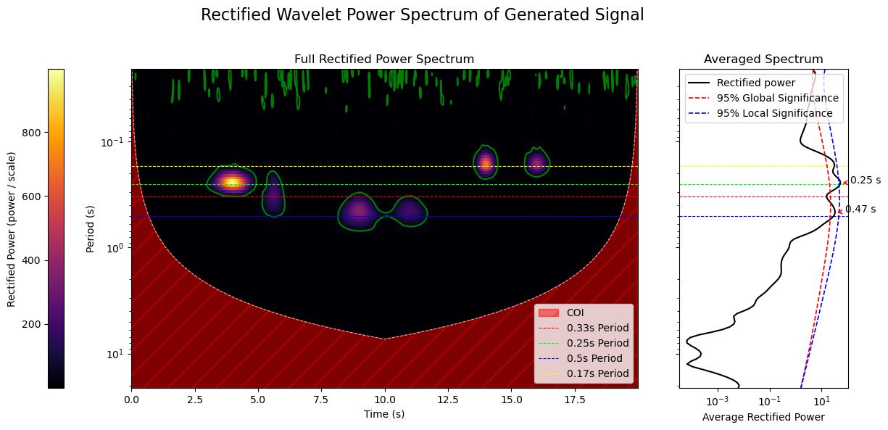
Fig. 13. Rectified wavelet power spectrum. QPP periods are clearly recovered above the 95% global significance contour (red).
Acknowledgments
This work is supported by NASA under the MUSE Mission development program. Additional support provided by the Montana State University Space Science & Engineering Laboratory (SSEL) and the MSU Department of Physics. Presented at the MSU Student Research Celebration — Spring 2026.
References
- Ning, H., Chen, Y., Wu, Z., Su, Y., Tian, H., Li, G., Du, G., & Song, H. (2018). Two-stage energy release process of a confined flare with double HXR peaks. The Astrophysical Journal, 854(2), 178. https://doi.org/10.3847/1538-4357/aaaa69
- De Pontieu, B., Cheung, M., & MUSE team. (2022). The MUlti-slit Solar Explorer (MUSE). Bulletin of the AAS, 54(7). https://baas.aas.org/pub/2022n7i408p03
- Tan, B., Zhang, Y., Tan, C., & Liu, Y. (2010). Microwave quasi-periodic pulsations in multi-timescales associated with a solar flare/CME event. The Astrophysical Journal, 723(1), 25–39. https://doi.org/10.1088/0004-637x/723/1/25